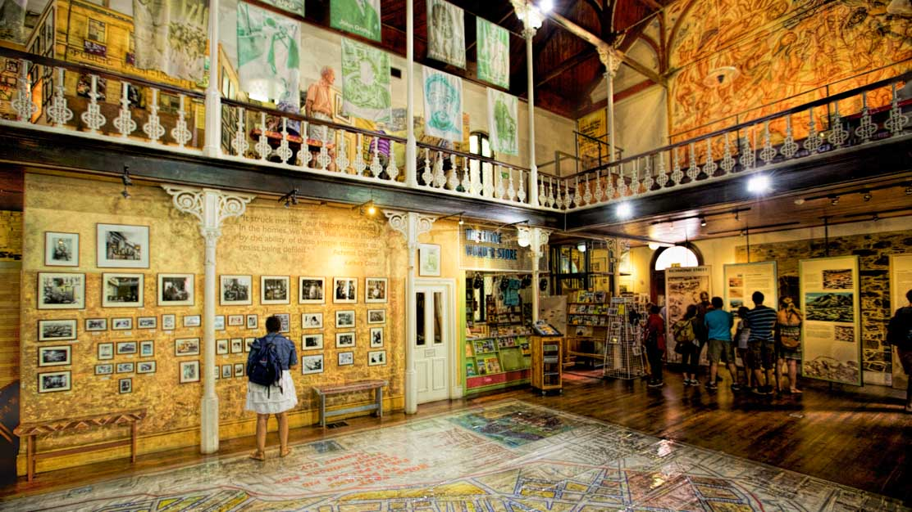

Un paraíso...
Ciudad del Cabo es una ciudad portuaria en la costa oeste de Sudáfrica, en una península bajo la imponente Montaña de la Mesa. Los teleféricos que rotan lentamente ascienden a la cima plana de la montaña, donde se pueden apreciar una vista panorámica de la ciudad, el ajetreado puerto y los botes que zarpan a isla Robben, la infame prisión donde estuvo recluido Nelson Mandela y que actualmente es un museo viviente.
Actividades y atracciones del lugar.
1 Playa de Boulders
A través de una pasarela elevada podrás acceder a este famoso lugar donde viven unos dos mil pingüinos africanos. Es el lugar ideal para pasar el día disfrutando de las playas de False Bay.
2 District Six
Este museo recoge la historia de la expulsión forzada y reubicación de los residentes negros durante el apartheid, así como la desaparición definitiva de este antiguo distrito multicultural.
3 Acuario Two Oceans
El nombre de este parque acuático refleja el encuentro de los oceános Atlántico e Índico, y alberga una representación de la vida marina que puede encontrarse en estas aguas.
4 Victoria and Alfred Waterfront
Para ir de compras, realizar actividades de ocio y almorzar en elegantes restaurantes, debes visitar el V&A. Cuando estés aquí, te recomendamos ver también el acuario y el estadio, así como hacer un crucero por la bahía.
5 Jardín Botánico Kirstenbosch
La laderas orientales de la Montaña de la Mesa se elevan sobre las franjas de estos jardines reconocidos por la UNESCO. La flora, conocida también como "fynbos", resulta más impresionante entre agosto y noviembre.
Comidas que debes probar si visitas el lugar
La comida típica de Sudáfrica se caracteriza por su gran variedad de ingredientes introducidos durante la época colonial. La trata de esclavos y sirvientes propició la incorporación de nuevos alimentos procedentes de otras partes del mundo como Malasia o Indonesia. También las etnias afrikáneres, un grupo étnico neerlandés que ocuparon las tierras del sur de África, incluyeron nuevas formas de elaborar los platos logrando mantener algunas de las costumbres más tradicionales de los indígenas.
El melktert
Bobotie

Bunny Chow
Potjiekos
Koeksisters
Vino de Sudáfrica